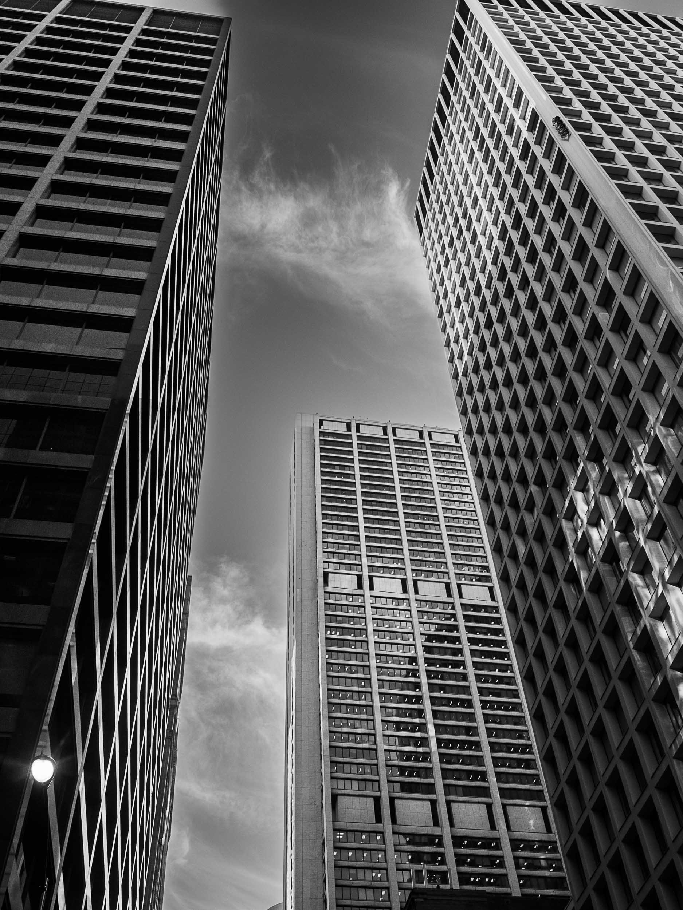
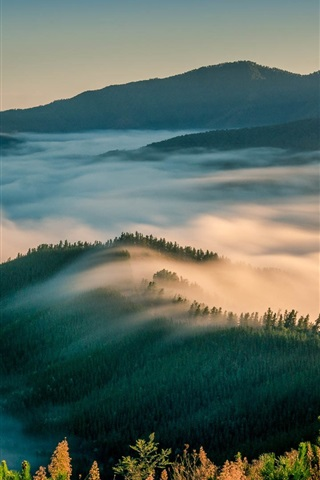
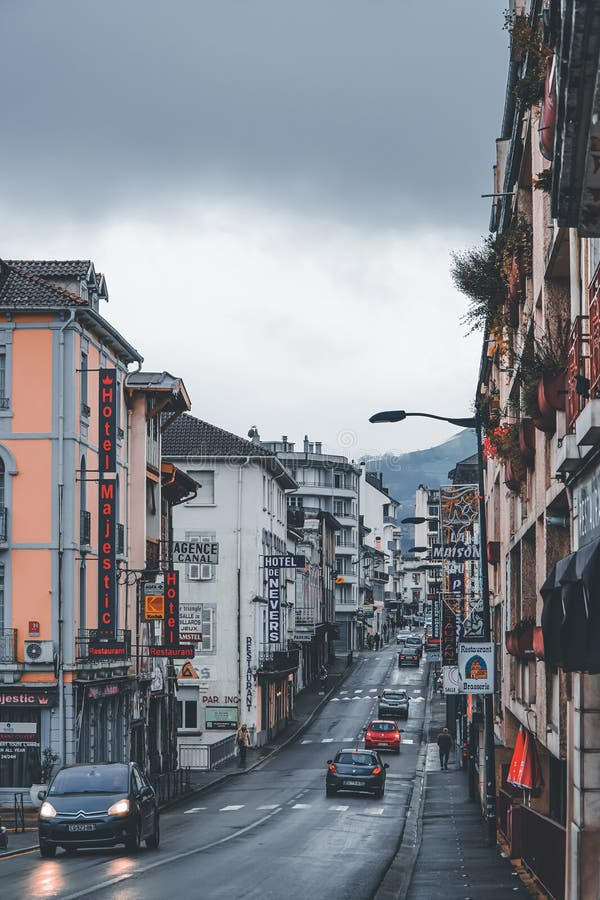

Photography · New York
Selected Work

Architecture series · 2025
Landscape · Catskills, 2025
Architecture · 2024
Street · Brooklyn, 2025

Landscape · Hudson Valley, 2024
About

Ye Chen is a photographer based in New York City, drawn to the quiet moments between movement and stillness — the way light falls on wet pavement, the geometry of concrete against sky, fog rolling through a mountain valley at dawn.
Working primarily in street, architecture, and landscape photography, Ye Chen's work explores the intersection of human spaces and natural environments. Each image is an attempt to hold a single, fleeting moment — one that would otherwise disappear unnoticed.
Currently based in New York, Ye Chen shoots across the Northeast and beyond. Available for commissions, collaborations, and print inquiries.
Get in Touch
For print purchases, commissions, or collaboration inquiries, reach out anytime.
hello@yechen.photo